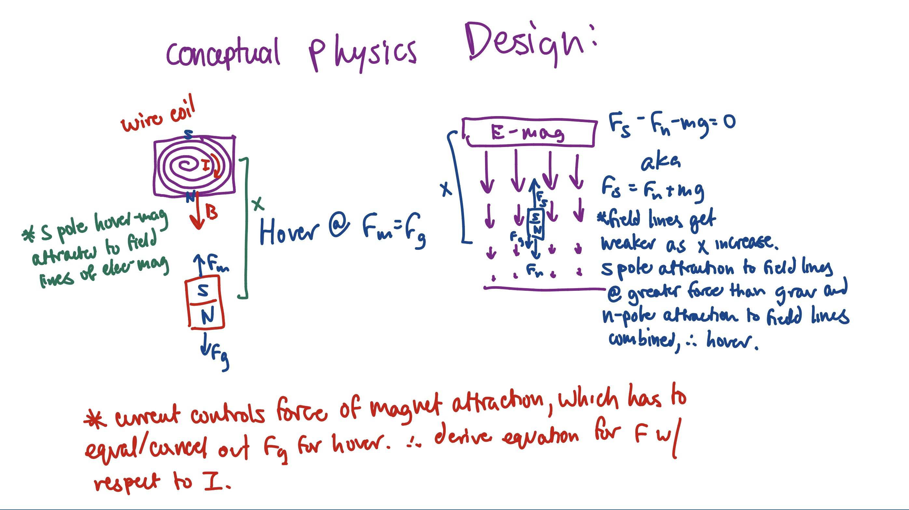
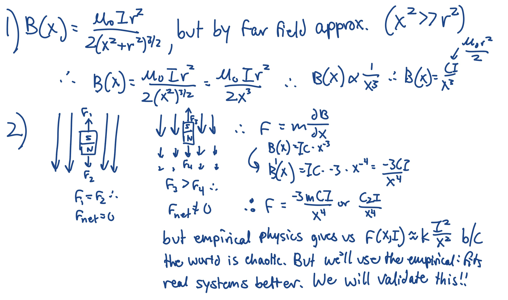
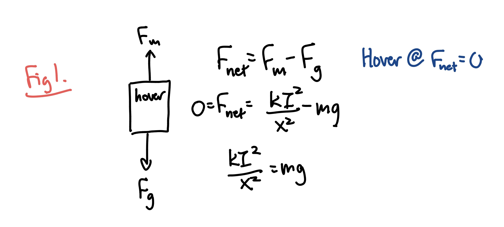
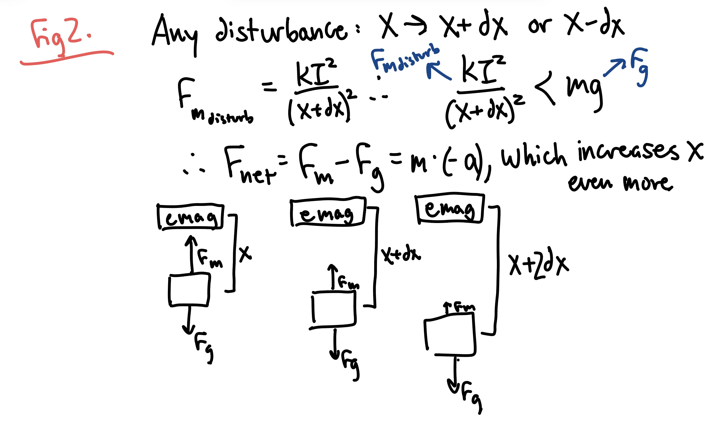
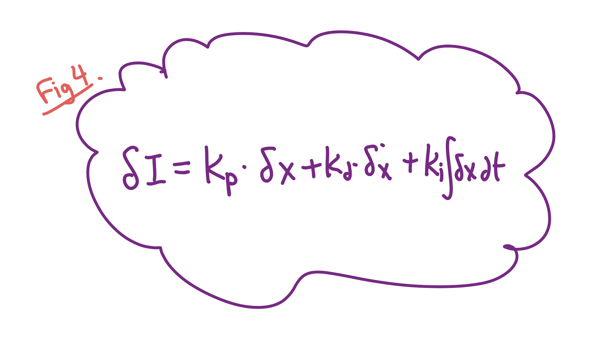
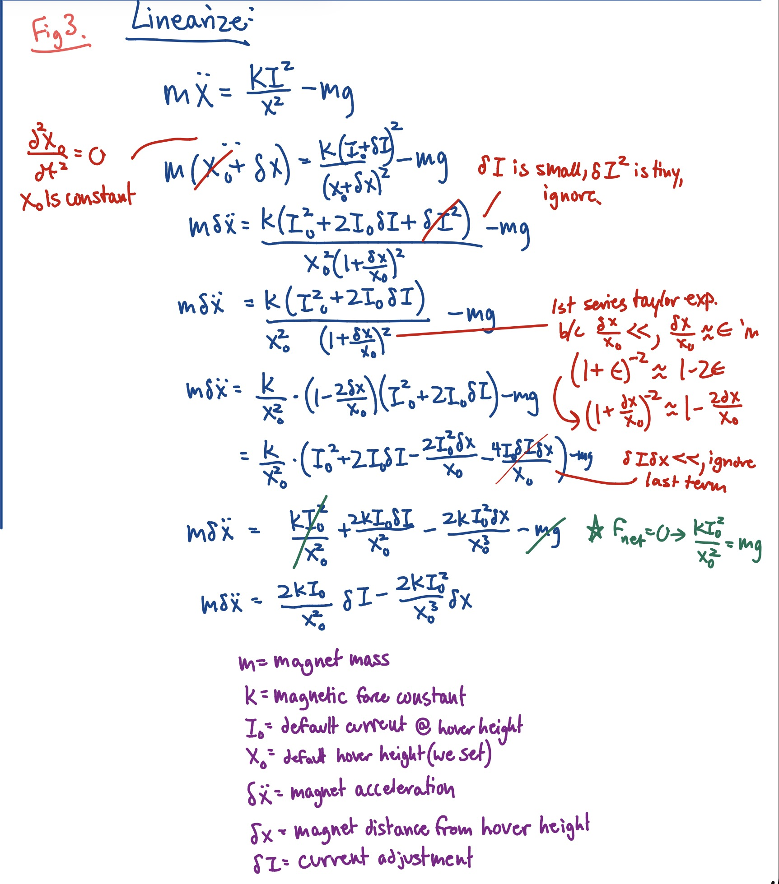
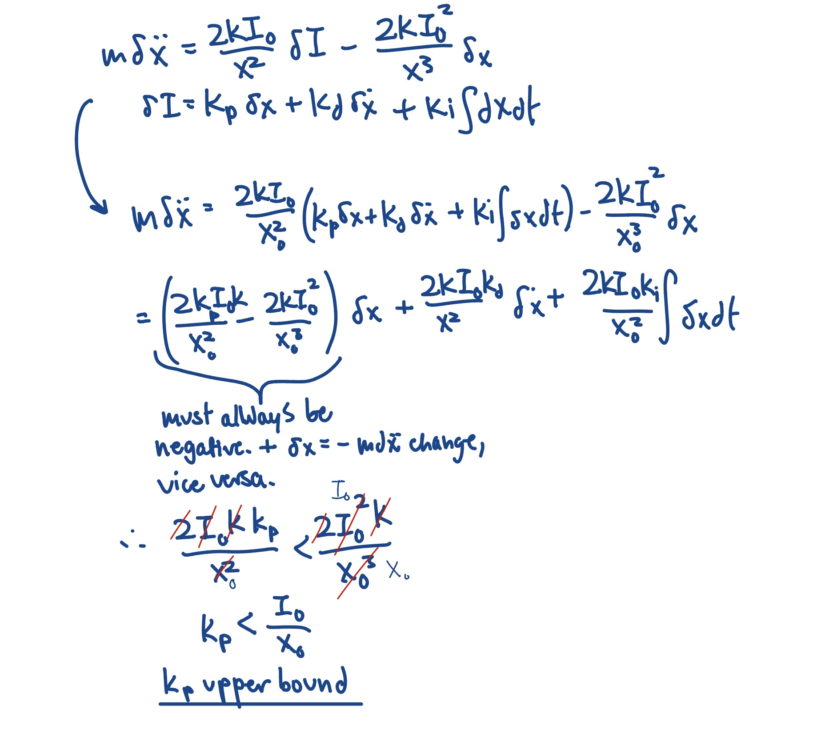

log 01 - pls asml nvidia i love you
post-pubescent kid's first rite of passage to engineeringhood (10-20 min read)
March 20-22, 2026
Hi again! So funny story I got rejected from a few schools today, and out of spite I've decided now's the time for me to build something. So I'm gonna make a magnetic levitation system, just because it sounds cool. And I'm coping. Anyways, this is literally my first personal project on this portfolio, so get ready for a lot of bad explanations that sound good to just me, messy code, and stupidity. But whatever, I'm excited.
baby engineer figures out physics exists
Fun fact. If you hold a magnet in the air, and try to independently suspend a magnet beneath it, it simply doesn't work. Woo Hoo. The lower magnet will either fall to the ground of fly up into the upper magnet. No matter how hard you try, you will fail, and I will laugh at you. Why does this equilibrium position not exist? Cuz life's not sunshine and rainbows.
big boys maxwell and earnshaw
So I did a big dive back into E&M, Earnshaw's Thereom, and
Laplace's Equation, which I literally haven't touched since last
year, but I did learn a lot. So Maxwell's equation follows that if
you create a gaussian surface around magnetic fields lines, the
total magnetic flux is always zero. In other words, all magnetic
field lines flowing in must flow out.
Also, its just important to highlight. Basically, equilibrium
means that theres a local minimum, like the bottom of a pit, And
if you move out of that pit, forces will push you back in. Thats
why something can stay suspended: if they ever move out of place,
they simply get pushed back.
Basically, Earnshaw later figures out in 1842 that this magical
"equilibrium" can't really be fully achieved when it comes to
magnets. Sounds like my life hah. hah, anyways
are the stars of this show. The first equation basically says to
have the lowest potential energy (which we like), the dipole
moment (m) and the magnetic field, which are both vectors, need to
be aligned, hence dot product. So not being aligned causes
positive U, which leads to torque or repulsion on the unaligned
magnet until the U lowers. But to establish equilibrium:
But what does this cause? Basically, this means that the three
second derivatives of magnetic field must sum to 0 ALWAYS due to
the property of magnets. Which means that if two of the planes are
in equilibrium (>0), then the last is unstable ( < 0) to achieve
sum 0. So like, if the magnet is hover stably in x and y axes, its
gonna repel or do funky stuff in the z axis. Fun.
Summary:
Ok so how do i actually do it
Alright, this next part is math so im switching dimensions to my ipad.


Essentially, our electromagnet is filled with coils of wire,
forming a solenoid. The magnetic field produced by this bad boy
points directly down via RHR, and decreases in field strength the
further you move from the e-mag itself (producing a gradient).
I am then able to calculate the force on each pole of
the hovering magnet by combining the solenoid formula with the
magnetic dipole in non-uniform field formula.
Note:
the gradient is what allows this phenomena to occur. In a uniform
field, the S-pole of the hovering magnet feels an attractive force
to the field lines moving into it from above. At the same time,
the north pole feels the same force but in an opposite direction
due to it being attracted to the field lines pointing away
underneath. In a uniform field, these forces cancel out and so the
only net force would be gravity, meaning NO HOVER. The gradient
allows the south pole to experience a stronger attraction due to
stronger field lines at the top, creating a net upward force that
counteracts gravity.
The derivation is simplified by
the fact that the field points in the same direction as the
hovering magnetic dipole vector, making the trig go away. However,
a quick google search nets us the fact that there's already an
empirically-established formula for these types of systems,
because in real life, many external variables knock this derived
equation off the rails. Again.
Woo hoo.
So instead, I've decided to use the widely
accepted formula (im not a sheep im just mindful).
Essentially, our solenoid creates a non-uniform
magnetic field, exerting a net upward force on the independent
magnet. The goal of this whole thing is to input a certain current
to produce a upward force that counteracts the big bad
downward-pointing Fg.
I learn more about PID control
Ok, so we literally have a formula now that, if you plug in a
current and where the magnet is currently (is that punny), it
gives you a force. We're done right? We just have to get that
force to somehow counteract gravity? WRONG. Minus 100 points.
In our system, the only variable we can control is the current.
Notice in this formula, the current is not only the input, but if
we try to isolate it, we would have to measure the force instead
as an input, which simply is not possible.
Lets do some theory building (back to the realm of steve jobs):

Again, at the point of "equilibrium", the magnetic induced force balances the force of gravity, allowing the magnet to hover. However, per my proof above (Earnshaw), there's a problem.

Let's say a tear I am going to shed from this project accidentally splashes onto the table, sending a TINY shockwave through the system. Per my sketches above, it can be see that the tiny change in hover distance (x + dx), slightly affects the force. But now, the two forces dont balance, and theres no equilibrium, and now theres chaos and everyone's baby is crying. If the hover distance even slightly increases, the force will decrease, leading to a negative acceleration, further increasing the hover distance, FURTHER DECREASING THE FORCE, you get it. In any case, here's another way to prove that true equilibrium cannot be achieved through this system. It's a perpetual positive feedback system.
Soo..... we need PID control. PID, or proportional integral derivative control is basically like, instead of natural equilibrium like a marble rolling off the sides of a bowl and staying stably at the bottom, returning to the same position when disturbed, its like sisyphus, but he's perpetually pushing the ball back up a hill which has no stable point.

Here's the standard PID equation, with this system's variables plugged in. Basically, there are three constants (Kp, Kd, Ki) that we can tune ourselves (Ziegler-Nichols), which takes our error (distance from set hover point), and uses it to calculate the change in current that we either add or subtract from the starting current.
Kp takes the error and changes current to offset that error. A Kp too high causes it to oscillate, it overcorrects, then overcorrects again, etc.
Kd subtracts the last two readings and uses that rate of change to once again manage the current. If it reads a rate of change too high, it'll act as a dampener and slow down the correcting. A value too high causes vibration, because it reads noise (changes of .xx mm that could be simply a measuring limitation) as meaningful data, causing changes to electrical noise/movement that never happened.
Ki responds to accumulated error. As an integral, it sees what kind of persistent error is in the system and adjusts. Again, too high Ki can cause oscillation like Kp.
Finding those variables could be a process of guess and check, but I don't have the parts yet, so I'm going to get a headstart by looking back to the physics equation we derived earlier, and linearizing it. Keeping it in this scuffed, nonlinear configuration won't go anywhere.

Essentially, we replace X with X0 + dx and I with I0 + dI. We're changing what the formula tracks (the independent variable) from total distances and currents to simply the errors around our set hover point: the change from original set current, and the offset distance from set position. In doing so, we effectively express this physics system linearly instead of nonlinearly, because in the original equation x and I are squared, meaning their changes are highly sensitive and cause the acceleration (dependent variable) to behave unpredictably. Now, since the linearized formula only looks at deviations/error from set points, the physics around these more magnified variables are relatively predictable, where small deviations behave proportionally.

Using our linearized equation. I'm able to also derive the upper bound of the Kp value.
As a reflection, linearizing and even deriving the equation in the first place is not technically REQUIRED just to hover the magnet. But deriving these equations allow me to understand WHY the system works, and the physics behind the system itself, which I think is just as important as building in the first place:
(looking back to the linearized equation) the acceleration of the magnet is defined as being controlled by the current in the solenoid while also being tipped by the instability of physics. It's like a game of tug and war.
next log
I figure out reality has a strong dislike for logic (I build!)